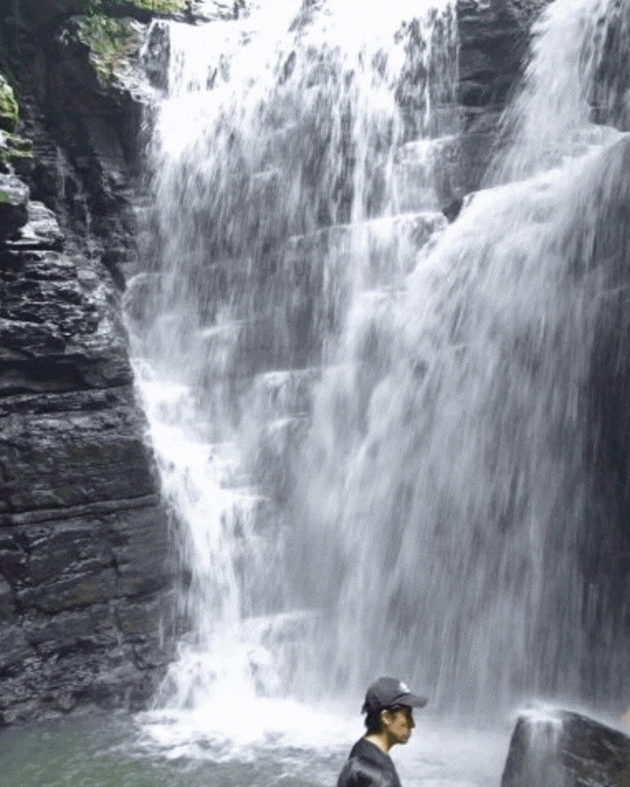
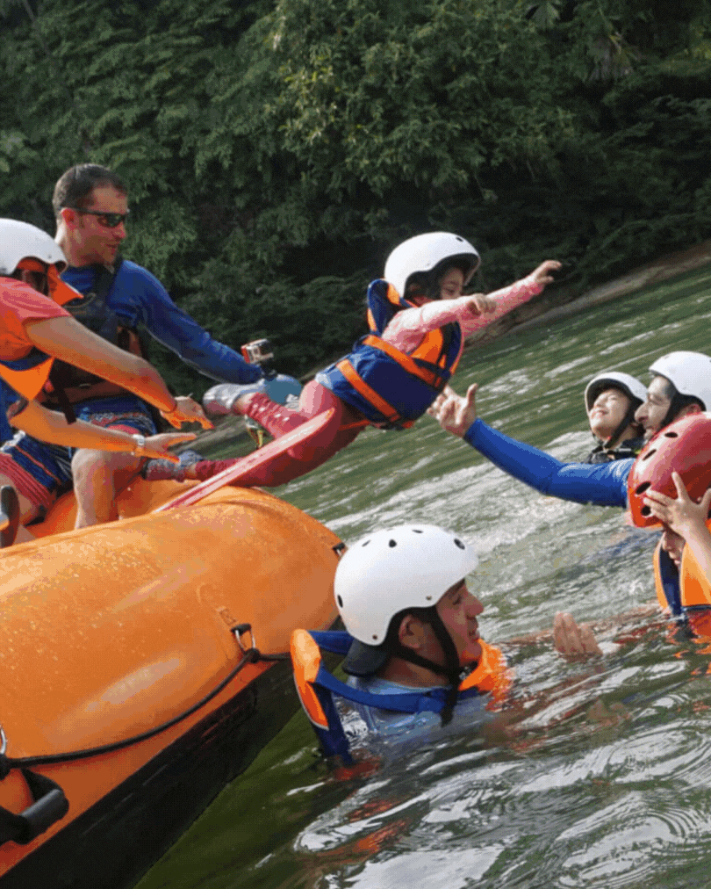
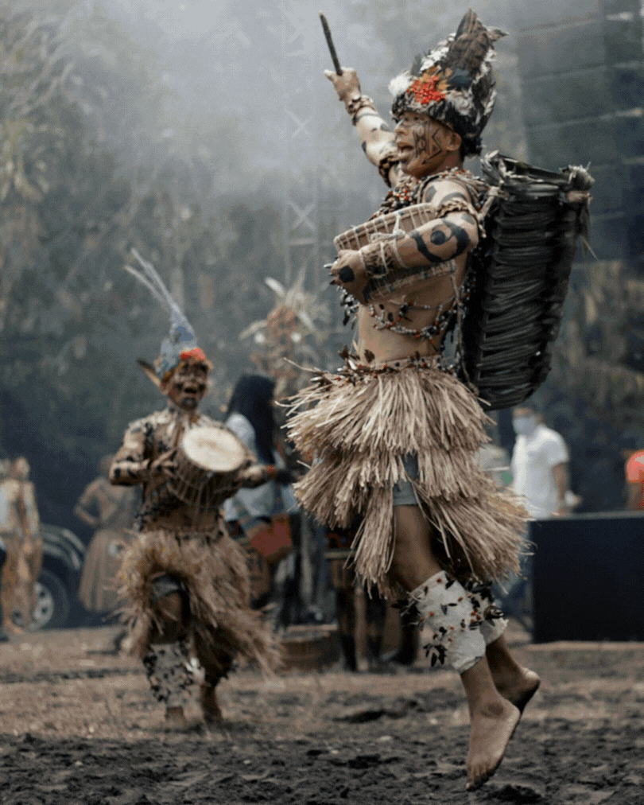

Explora los paisajes, ríos, cascadas y aventuras que Tena tiene para ofrecer.
Las Cascadas de Latas y Umbuni un salto de agua que forma un tobogán, se encuentra en la región amazónica del Ecuador. Las Piedras de gran tamaño en el cauce del río hacen que sus aguas formen saltos, cascadas y vados de gran belleza. En su trayectoria el río se encajona formando un tobogán.

Desde Tena vía terrestre ya sea transporte público o privado con un tiempo de 25 minutos en la dirección Tena a Pto. Misahuallí, es un lugar lleno de magia, el mismo que se lo puede disfrutar con grupo de personas, te invitamos a ser parte de este paraíso.

Descubre la magia de Tena, la "Capital del País de la Canela", en pleno corazón de la Amazonía ecuatoriana. Sumérgete en un destino que fusiona naturaleza, aventura, cultura y deliciosa gastronomía.

Página creada por Estefanny Lovera